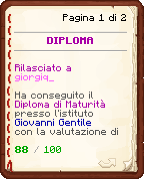

Giorgia De' Medici nasce a Winchester in una famiglia tranquilla formata da lei, suo padre e il suo fratellino poichè la madre morì quando lei era ancora piccola. Avevano un negozietto a conduzione familiare che, pero’, vacillava. Giorgia aveva sempre rinunciato alla sua carriera per aiutare suo padre con la casa, ma ad un certo punto prese in mano la sua vita: si trasferì a neotecno per ricominciare e imparare ad autogestirsi.
Iniziò piano piano la sua carriera, si sposò e trovò dei lavoretti qua e la', per poi iniziare una carriera.
Ella pero' ha sempre inseguito delle passioni: insegnare ed aiutare gli altri.
Giorgia lavorò come Magistrata e tutt'ora lavora come Professoressa, ma sentiva le mancasse qualcosa, perciò decise di entrare nel Corpo dei Vigili del Fuoco, per aiutare la comunità e salvare delle vite.
 Diploma
Diploma
